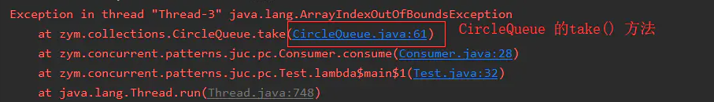
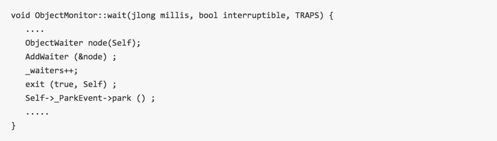

深入理解wait和notify
生产者和消费者模式：有个盛装数据的容器(list)即缓冲区, 一个往容器里放数据即生产者,一个从容器中取数据即消费者。 但当容器满的时候，生产者就不能往里放东西了，此时需要等待缓冲区不满， 即有消费者从容器中取出数据了，这就需要一个等待和通知的功能了。 这个功能我当时是直接使用Java 中 Object 定义的wait、notify和notifyAll来实现的。
如果线程调用了Object对象的wait()方法，那么线程会处于该对象的等待池中，等待池中的线程不会去竞争该对象的锁。 当有线程调用了Object对象的notify()方法（只随机唤醒一个wait线程）或是notifyAll()方法（唤醒所有wait线程） 被唤醒的的线程会进入该对象的锁池中，锁池中的线程会去竞争该对象锁。 优先级高的线程竞争到对象锁的概率大，假若某线程没有竞争到该对象锁，它还会留在锁池中， 只有线程再次调用wait()方法，它才会重新回到等待池中。而竞争到对象锁的线程则继续往下执行，直到执行完了synchronized代码块， 它会释放掉该对象锁，这时锁池中的线程会继续竞争该对象锁
有问题却一眼看不出问题的消费者和生产者模式
下文将使用Java 实现一个简单的消费者和生产者模式，代码如下：
public class Producer {
//缓冲区
private CircleQueue<String> cache;
public Producer(CircleQueue<String> cache) {
this.cache = cache;
}
public synchronized void produce(String e) throws InterruptedException {
if (cache.isFull()) {
cache.wait();
}
cache.put(e);
cache.notifyAll();
}
}
public class Consumer {
private CircleQueue<String> cache;
public Consumer(CircleQueue<String> container) {
this.cache = container;
}
public synchronized void consume() throws InterruptedException {
if (cache .isEmpty()) {
cache.wait();
}
System.out.println(
String.format("thread:%s,consume a element:%s",
Thread.currentThread().getName(),
cache .take()));
cache.notifyAll();
}
}
大家看了一遍，有没有看出来上面代码运行会报错？运行一下测试代码(见最下面)大家就明白了：

生产者执行produce 函数的时候，执行到cache.notifyAll() 会抛出这个异常，这个异常代表什么意思呢？ 我们来看看IllegalMonitorStateException 的注释： Thrown to indicate that a thread has attempted to wait on an object's monitor or to notify other threads waiting on an object's monitor without owning the specified monitor. 上面这个注释, 它想表达两个意思
- 在不拥有当前对象监视器的情况下调用当前对象的wait方法
- 在不拥有当前对象监视器的情况下调用当前对象的notify和notifyAll
上面报错的原因就是因为满足了第2条,其实同样 cache.wait() 这里也有问题。下面我们来改下代码：
public void produce(String e) throws InterruptedException {
synchronized (cache) {
if (cache.isFull()) {
cache .wait();
}
cache.put(e);
cache.notifyAll();
}
}
public void consume() throws InterruptedException {
synchronized (cache) {
if (cache.isEmpty()) {
cache.wait();
}
System.out.println(
String.format("thread:%s,consume a element:%s",
Thread.currentThread().getName(),
cache.take()));
cache.notifyAll();
}
}
上面只粘贴了主要的代码，synchronized 关键字修饰的是cache,因此当线程进来的时候获取的是cache对象的监视器， 因此到下面无论执行cache.wait()还是cache.notifyAll() 都不会抛出异常。 当然上面的代码还是有问题的，不知道大家有没有看出来？我们来执行下测试代码，发现报错了， 但是也有可能你执行的时候并没有报错，因为这是多线程，存在很多偶然性，多运行几遍你就会发现你中奖了，报错如下：

上面报错的是Consumer 中的cache.take()处抛的异常， cache对象的类型CircleQueue 是我自己实现的一个环形队列,抛出该异常是因为队列已空， 如果这样大家就奇怪了，能执行到cache.take() 不是因为队列不为空才唤醒当前线程的吗？
我先介绍下当某个线程调用wait的时候发生了什么？ 它会释放调用对象上的监视器即锁，然后进入一个条件等待队列中等待被唤醒， 此时有别的线程改变了状态(eg: 队列为空，队列已满),然后调用notifyAll(), 条件等待队列中的线程再次获取调用对象上的监视器，然后继续向下执行。 画一个草图给大家理解下：

在一个线程被唤醒到获取锁的这个时间里， 可能有另外一个线程改变了状态 ( 往队列插入元素或者从队列中取出元素 ), 然后该线程往下执行的时候发现缓冲区为空或者已满这种现象。 大家估计也想到了解决办法，就是被唤醒再次获取锁之后再判断一次状态， 加一个循环就搞定了，代码如下：
public void consume() throws InterruptedException {
synchronized (cache) {
// 这里把if改为while 就可以了
while (cache.isEmpty()) {
cache.wait();
}
System.out.println(
String.format("thread:%s,consume a element:%s",
Thread.currentThread().getName(),
cache.take()));
cache.notifyAll();
}
}
为啥需要操作同一个共享资源cache对象呢?
先说明： object类的wait/notify 方法都是native方法,需要额外下载jvm的源码才可以看到传送门：openJDK 下载， 打开源码：openjdk\hotspot\src\share\vm\runtime 目录下objectMonitor.cpp objectMonitor.hpp 2个文件， 这些属于c语言源码。
其中在objectMonitor.hpp文件中定义一个非常重要的对象ObjectMonitor对象
ObjectMonitor对象:
主要用来监视创立的Object , 说白了就是我们经常说的所对象在jvm中的具体化(c++的结构体， 单纯看做java对象就可以)

上面对象结构体中有4个非常关键的属性
- _owner：指向于当前持有锁的线程
- _object：指向例子中的shop对象
- _WaitSet：调用wait方法之后的线程会被挂入到这个队列
- _EntryList：等待获取锁(那个shop对象锁)的线程，被挂入到这个队列。
注意：_WaitSet跟_EntryList 实现类是ObjectWaiter,是一个双向链表。
调用wait方法;在objectMonitor.cpp 文件中，有个方法：

去掉一些看不懂， 留下几行比较有用的操作
- ObjectWaiter node(Self);java线程调用shop.wait方法,jvm马上当前线程进行封装成一个ObjectWaiter对象
AddWaiter(&node);接着将该对象添加到_WaitSet队列中

_waiters++; 队列的长度加1
- exit (true, Self) 这里注意， 直接退出，这里表示马上释放锁。也就是当线程调用了wait方法之后， 马上释放对象锁。
- Self->_ParkEvent->park () ; 表示停止，等待， 也就是挂起来， 等待被唤醒。
调用notify方法,在objectMonitor.cpp 文件中，有个方法：
总结：调用wait方法之后， 会将线程挂起， 暂存到_waitSet队列中，然后释放锁。
调用了DequeueWaiter方法

再调用DequeueSpecificWaiter方法
总结：调用notify方法之后， 会从_waitSet队列中随机唤醒一个线程， 然后暂存到_entryList队列中， 参与cpu争夺。注意此时还没有释放锁。 需要等notify方法调用方法执行完之后再释放。